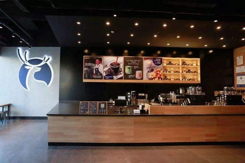

Linchuan Yang
Work experience
Working Time: Oct. 10-Oct. 15, 2011
Job Description: 1. Responsible for educational consulting, namely, educational career planning, establishing the framework of consultants' educational career, making plans, organizing copywriting and participating in revision.
2. Participate in the expenditure budget and cost control of education, organize the details of education, supervise and inspect the plan and follow up the follow-up of consultants.
3. Drafted contracts, talked with consultants and negotiated with consultants on changes of follow-up plans, finally took charge of contract signing and management, and settled labor disputes and lawsuits on behalf of the company.
4. Regularly organized the company's internal assessment system, conducted staff assessment, prepared salary plan, reviewed fund allocation and commission.
5. Responsible for the company's attendance collection and sorting out work information, and establishing human resources system.
6. Advise consultants on major decisions and estimate future risks and benefits.
7. Managed labor relations and compensation and welfare of the company.
Mainly through the telephone invitation, hope to improve the academic performance of the students' parents, in the phone to let parents understand the preliminary from that aspect to improve the student's academic performance and adjust the learning state, the parents invited to the school to negotiate, for their children to draw up learning programs. Achievements: Signed the company's first order and always ranked among the top of the company.Parents often get affirmation in work.
In professional skills, familiar with office software and professional drawing software AutoCAD, document finishing and classified, careful meticulous work, pay attention to observe details and found the problem, and has strong insight and logical reasoning ability, good at learning and flexible use of new efficient work methods, administrative kind of clerical work, familiar with office procedures and comply with the rules and regulations.
I am interested in European and American pop music, handcraft, painting, photography, film, hip-hop, animation, games and so on.
Good communication skills, able to communicate better with the parent of the consultant.
Due to professional reasons, I can better communicate with consultants of all ages and summarize information.
Invite and visit by phone. Answer parents' calls timely and accurately, provide professional consultation to parents strategically, and make good records. Make demand analysis, guide parents to bring children to the door, and receive consultation. A comprehensive test and analysis of children, develop a reasonable learning plan, so that parents recognize; Follow up the formal students' classes and post-maintenance, assist the teaching affairs teacher to manage students in class, and ensure the quality of service.
Diagnose and analyze students' learning status according to the actual situation provided by students and their parents, develop individualized learning counseling programs and plans suitable for students, and actively work with the Marketing Department. When the school carries out large-scale publicity activities, it is necessary to consult with department employees on the publicity site.
Enter bio here
Enter bio here
Experience
Developer
• I worked as a propagandist in an educational institution, distributed leaflets in the square and wrote down telephone numbers to communicate with customers later
• Worked in coffee shop, have coffee making experience and can make basic coffee
• In my high school, I participated in volunteer activities. My specific work content was to accompany the elderly in nursing homes and perform singing and dancing activities for them
Education
UC Riverside
University of California Riverside
University of California Riverside
Portfolio
